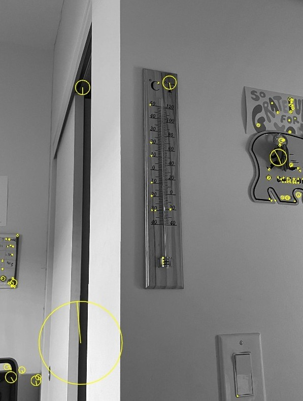
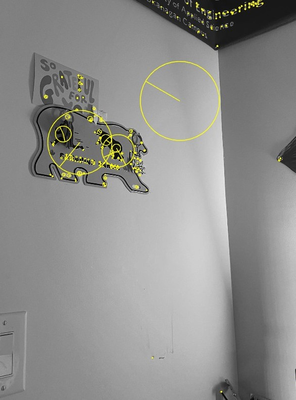
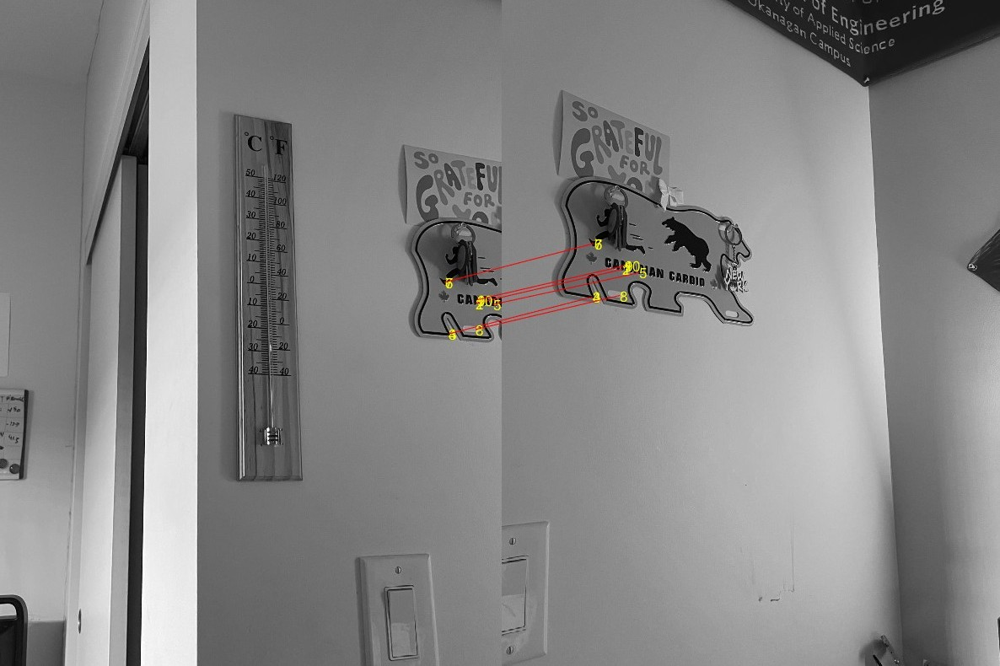
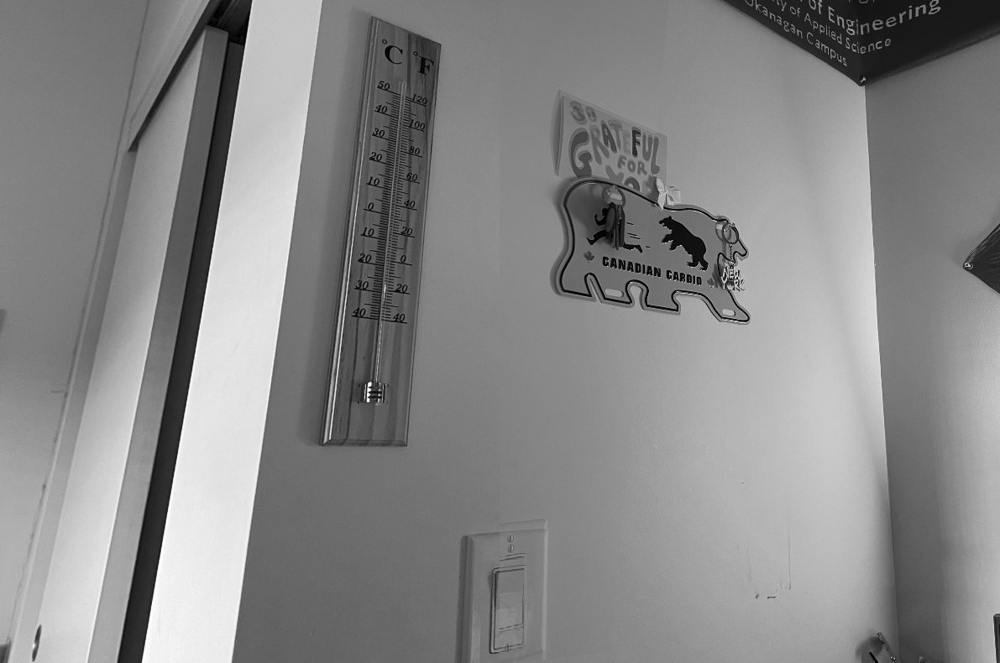

This project involved implementing the RANSAC algorithm to estimate a homography matrix between two sets of points. The algorithm was used to find the best fit homography that maps points from one image to another. The steps involved are:
- Use SIFT algorithm to detect and describe keypoints in both images
- Match the keypoints between the two images using the SIFT descriptors
- Compute the homography matrix using the selected point
- Calculate RMS as performance/accuracy metric
- Repeat the process for a specified number of iterations (found using RANSAC algorithm) and keep the best homography with the most inliers



